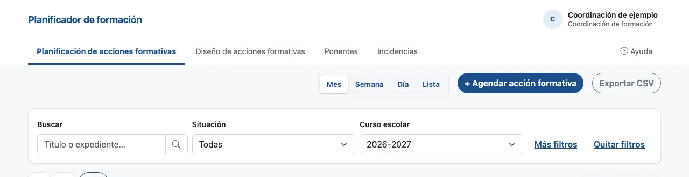
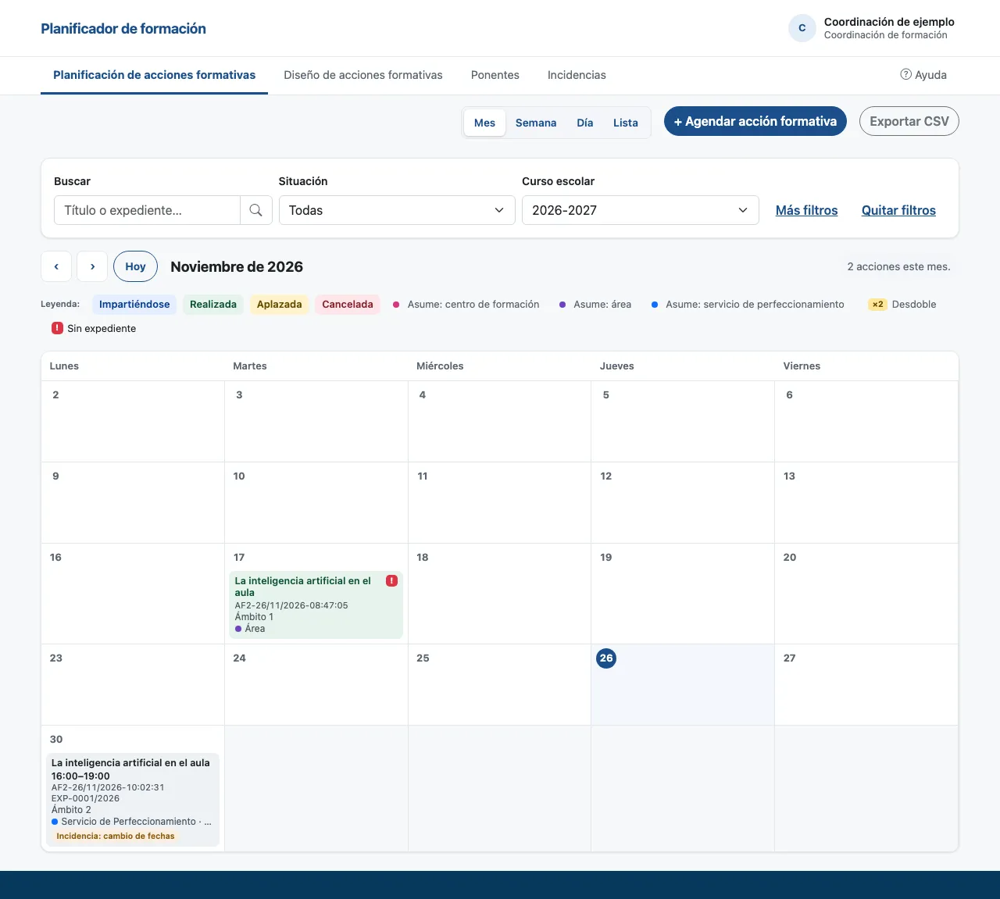
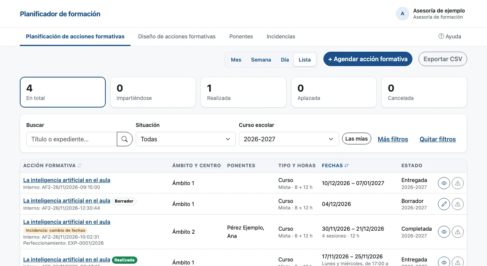
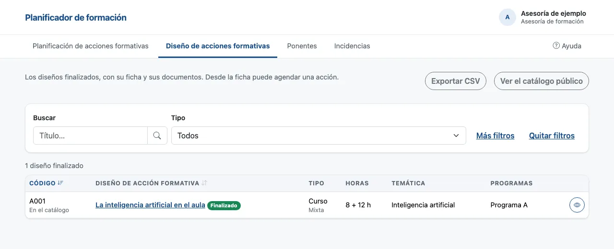
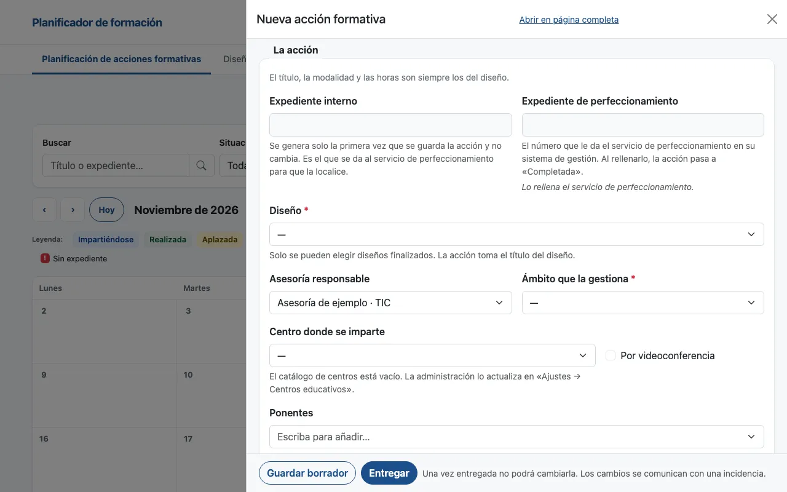
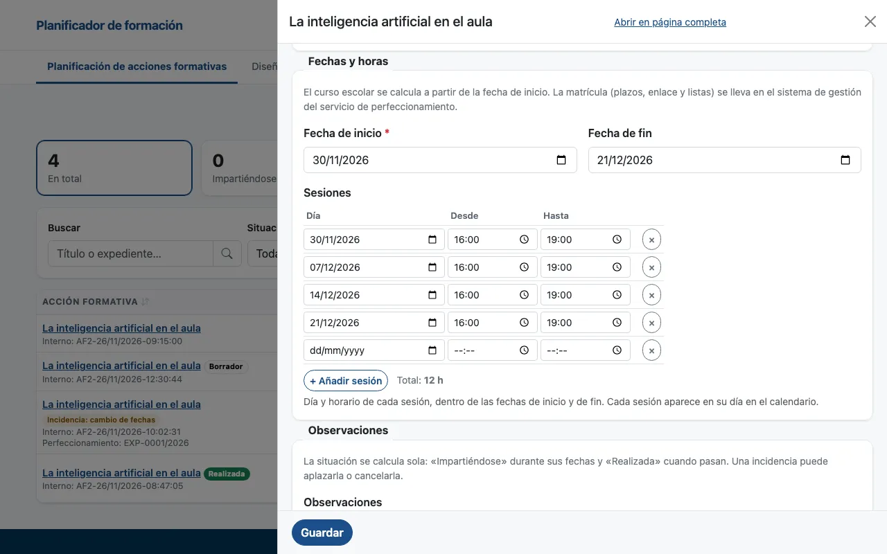
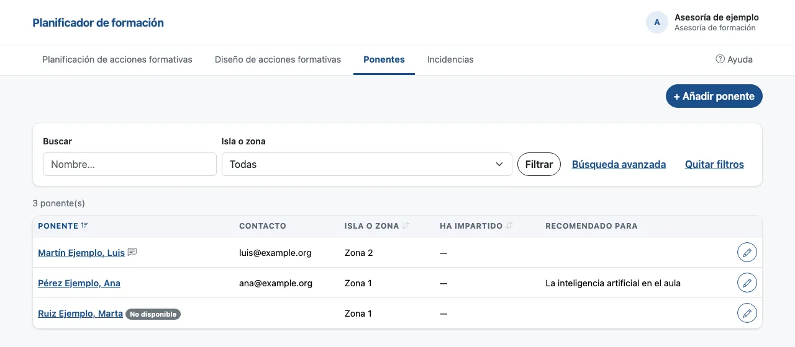
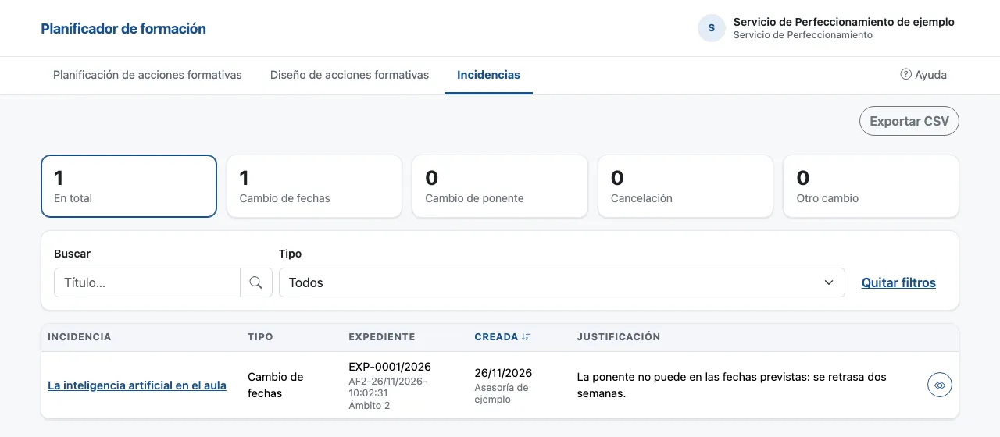
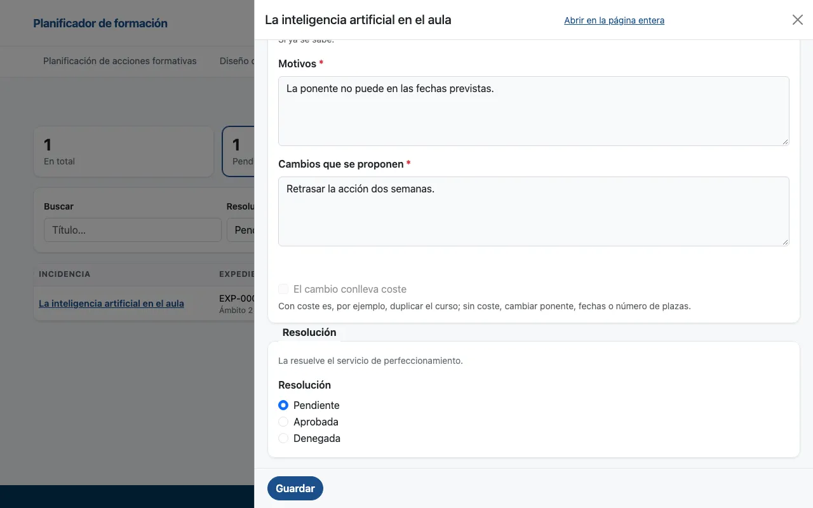
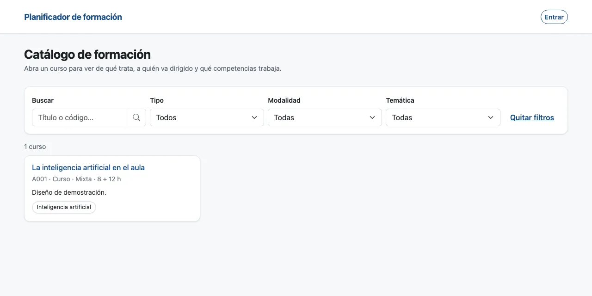

Para empezar: diseños y acciones
El planificador separa dos cosas que antes iban juntas:
- El diseño es el curso tal y como se ha pensado: título, tipo, modalidad, horas, objetivos, contenidos y documentos. Se escribe una vez y forma el catálogo.
- La acción formativa es una vez que ese diseño se imparte: en qué fechas, en qué ámbito y centro, con qué ponentes y quién la paga. Un mismo diseño puede tener muchas acciones.
Arriba están siempre tu nombre y tu perfil, y debajo las pestañas. Cada uno ve solo las pestañas de lo que puede hacer. La campana, cuando sale, cuenta las incidencias que están esperando una respuesta.

Las fichas se abren en un panel a la derecha, sin perder de vista la lista. Con «Abrir en la página entera» se ve en grande, y con la × o la tecla Esc se cierra.
Quién hace qué
| Perfil | Qué hace |
|---|---|
| Coordinación de formación | Escribe los diseños, los da por finalizados y los pasa a histórico. Ve y corrige todo. |
| Asesoría | Consulta los diseños finalizados, agenda acciones, mantiene el directorio de ponentes y abre incidencias sobre sus acciones. |
| Servicio de perfeccionamiento | Consulta las acciones, pone el número de expediente y resuelve las incidencias. |
Los nombres de los perfiles pueden ser otros en tu instalación; lo que hace cada uno, no.
Consultar la planificación
La pestaña Planificación de acciones formativas se abre en el calendario del mes.
- Cambia de vista con Mes, Semana, Día o Lista. Con las flechas pasas de mes y con Hoy vuelves al actual.
- El color del borde dice cómo va la acción: impartiéndose, realizada, aplazada o cancelada. El punto de color dice quién la paga. La leyenda está encima del calendario.
- Para buscar, escribe en Buscar el título, el subtítulo o el expediente, elige la situación o el curso escolar y pulsa Filtrar. Con Búsqueda avanzada salen más filtros, y Quitar filtros lo deja como al entrar.
- Pulsa una acción para abrir su ficha.

La vista Lista es la misma información en una tabla: con los contadores de arriba ves cuántas hay en cada situación, y con Exportar CSV te llevas a una hoja de cálculo lo que estás viendo, con sus filtros.

Consultar los diseños
La pestaña Diseño de acciones formativas es el catálogo de trabajo. La asesoría ve aquí los diseños finalizados; la coordinación ve también los borradores, los que están en revisión y el histórico, con un contador para cada estado.
- Busca por el título o elige el tipo y pulsa Filtrar.
- Pulsa el título, o el ojo de la derecha, para ver la ficha completa con sus documentos.


Escribir un diseño Coordinación
- En Diseño de acciones formativas, pulsa + Añadir diseño.
- Rellena el título, el tipo de formación y la modalidad. Las horas que se piden dependen de la modalidad. El código lo pone el aplicativo al guardar por primera vez.
- En Clasificación, elige los programas que lo cubren y su temática. Solo se ofrecen los programas vigentes.
- En Contenido del diseño, escribe la descripción, los destinatarios, los objetivos y los contenidos: esos cuatro salen en el catálogo público.
- En Documentos, sube el diseño, la escaleta y las presentaciones en editable, y los recursos en PDF. El de Diseño del curso es el fichero maestro: uno solo, siempre la versión vigente, y es la ficha técnica que se descarga desde el catálogo público.
- Abajo eliges qué hacer con él:
- Guardar borrador: lo sigues otro día; la asesoría todavía no lo ve.
- Mandar a revisión: queda pendiente de que la coordinación lo dé por bueno.
- Dar por finalizado: ya se puede agendar, y si marcaste «Sale en el catálogo público», se publica.

Un diseño que ya no se imparte no se borra: se pasa a histórico. Así se conservan sus acciones pasadas, pero ya no se puede elegir para una nueva. Si un diseño nuevo sustituye a otro, indícalo en «Sustituye a»: al finalizarlo, el antiguo pasa solo a histórico.
Agendar una acción formativa Asesoría
Hay dos caminos: desde la ficha del diseño, con Agendar una acción con este diseño, que ya trae el diseño elegido; o desde la planificación, con + Agendar acción formativa.

- Elige el diseño. Solo salen los finalizados, y debajo ves el tipo, la modalidad y las horas del elegido, con un enlace a su ficha: así se distinguen dos diseños de título parecido. El título, la modalidad y las horas son los del diseño; si quieres distinguir esta edición, usa el subtítulo («Segunda edición», «Edición de tarde»…).
- Indica la asesoría responsable, el ámbito que la gestiona y el centro donde se imparte, o marca «Por videoconferencia».
- Añade los ponentes: escribe parte del nombre y elígelo. Al lado de cada nombre ves su isla o zona y lo que ya ha impartido; la ★ marca a quien se recomienda para ese diseño.
- En Financiación, elige quién la asume. Si la asume el servicio de perfeccionamiento, el programa lo pone el aplicativo.
- Pon la fecha de inicio y, si la sabes, la de fin. En Sesiones, una fila por sesión con su día y su horario; con + Añadir sesión sale otra, y la × la quita. Debajo ves el total de horas, y el calendario pinta cada sesión en su día.
- Pulsa Guardar borrador si te falta algo, o Entregar cuando esté completa.


Ponentes
Los ponentes son un directorio compartido: cualquier asesoría puede dar de alta a alguien y poner al día cualquier ficha.
- En Ponentes, busca por el nombre o filtra por isla o zona antes de dar de alta a nadie: puede que ya esté.
- Si no está, pulsa + Añadir ponente, rellena su ficha y guarda. Ya se puede elegir al agendar.
- En «Ha impartido» ves cuántas acciones y horas lleva; en «Recomendado para», los diseños para los que se le propone.
- Si alguien no puede dar formación por un tiempo, marca «No disponible» en su ficha: sigue en el directorio, pero sale en gris al elegir.

Los datos de los ponentes son datos personales: no se exportan y solo los ve quien trabaja con ellos.
Pedir un cambio: las incidencias Asesoría
- Busca la acción en la vista Lista y pulsa el triángulo ⚠ de su fila. También puedes abrir la ficha de la acción y pulsar Abrir una incidencia.
- Elige qué se pide: un cambio en la acción, aplazarla o cancelarla. Si es aplazarla, indica las nuevas fechas si ya las sabes.
- Escribe los motivos y los cambios que se proponen, y marca si el cambio conlleva coste.
- Pulsa Enviar la incidencia.

Una incidencia enviada no se puede cambiar: si hay que corregirla, se abre otra. Si pide aplazar o cancelar, la acción queda aplazada o cancelada en cuanto se envía. En la pestaña Incidencias ves las incidencias y en qué han quedado.
Servicio de perfeccionamiento: expediente e incidencias Servicio
El expediente. Cuando hayas creado la acción en el sistema de gestión del servicio, abre su ficha en el planificador, escribe el número en Expediente y guarda. El expediente solo lo escribe el servicio, y es por lo que se busca después la acción.
Las incidencias. La campana de arriba cuenta las que están pendientes; al pulsarla se abre la lista ya filtrada.

- Pulsa la incidencia para abrirla y lee qué se pide y por qué.
- En Resolución, marca Aprobada o Denegada y pulsa Guardar.

El catálogo público
Los diseños finalizados que tienen marcado «Sale en el catálogo público» se ven sin entrar, en el catálogo: se puede compartir su enlace con el profesorado. Se llega desde Ver el catálogo público, en la pestaña de diseños.

Preguntas frecuentes
¿Dónde pongo los plazos de matrícula, el enlace de inscripción o las listas de admitidos?
En ningún sitio de aquí. La matrícula la lleva el sistema de gestión del servicio de perfeccionamiento, con sus plazos, su enlace y sus listas. En el planificador se registra la acción: sus fechas y sus sesiones.
Entregué una acción y ahora tengo que cambiarla. ¿Cómo lo hago?
Con una incidencia sobre esa acción: pedir un cambio. Una acción entregada ya no la edita quien la entregó, para que el servicio sepa siempre qué ha cambiado y por qué.
Al agendar no encuentro el diseño que busco.
Solo se pueden agendar los diseños finalizados. Si está en borrador, en revisión o en el histórico, no sale. Pregunta a la coordinación de formación en qué estado está.
¿Por qué no puedo cambiar el título de la acción?
Porque es el del diseño, y así todas las ediciones de un curso se llaman igual. Para distinguir una edición, usa el subtítulo.
Un programa ya no sale en la lista.
Solo se ofrecen los programas vigentes. El que dejó de estarlo se queda en los diseños y acciones que ya lo tenían, pero no se puede elegir para uno nuevo.
El centro donde se imparte no aparece.
La lista sale del catálogo de centros, que se pone al día solo. Busca por el código o por parte del nombre. Si sigue sin salir, avisa a la administración del planificador.
Un ponente no está en la lista al agendar.
Dalo de alta en la pestaña Ponentes y vuelve a abrir la ficha de la acción: ya saldrá. Antes, búscalo por el apellido por si ya existe con otro orden en el nombre.
Mi acción tiene «Días y horas» escrito a mano y no lo puedo cambiar.
Es lo que se escribió antes de que hubiera sesiones, y se conserva tal cual para no perderlo. Si la acción sigue viva, añade sus sesiones en la lista de arriba: desde entonces, el calendario la pinta en cada día.
¿De qué curso escolar es una acción?
Lo deduce el aplicativo de la fecha de inicio. No hay que indicarlo.
¿Qué significa la marca «!» de una acción en el calendario?
Que a la acción le falta el diseño, las plazas o la modalidad. Ábrela y complétala.
Algo no funciona o no sé cómo hacerlo.
Escribe a la coordinación de formación contando qué intentabas hacer y en qué pantalla estabas; si puedes, con una captura. Las dudas que se repitan acabarán en esta página.